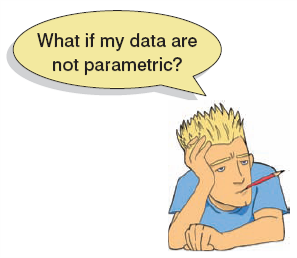
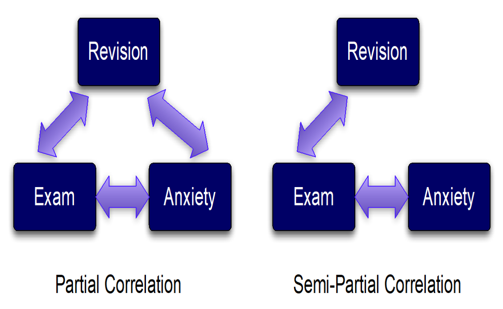

Introduction
Correlation II
Statistics for CSAI II
Travis J. Wiltshire, Ph.D.
Outline
there is missing exercise 1?
What we will cover today:
- Correlation (revisited)
- Nonparametric measures
- Spearman’s rho
- Kendall’s tau
- Interpreting correlations
- Causality
- Partial correlations
- Syllabus/Open Stats Lab
- PE updates
LearnR
- Optional
- Have a Swirl equivalent
Quiz
Question 1
Results
1. How do you estimate the amount of overlap in variance between two variables using the correlation (r)?
Question 2
Results
2. An estimate of the the correlation between Scoville Heat Units in various chili peppers and perceived pain is .7. What size effect is this?
Question 3
Results
3. The null hypothesis for a correlation test is which of the following?
Question 4
Results
4. How glad are you to have the option to attend lectures on campus?
1. Correlation (revisited)
Covariance
- Calculate the error between the mean and each subject’s score for the first variable (x).
- Calculate the error between the mean and their score for the second variable (y).
- Multiply these error values.
- Add these values and you get the cross product deviations.
- The covariance is the average cross-product deviations:
\[cov(x,y)=\frac{\sum_{i=1}^{N}(x_{i}-\bar{x})(y_{i}-\bar{y})}{N-1}\]
Pearson’s Correlation Coefficient
\[ r =\frac{ cov_{xy} }{s_{x}s_{y}}\]
\[r =\frac{ cov_{xy} }{s_{x}s_{y}}=\\ =\frac{ 4.25 }{1.67\times2.92 } = \\= .87\]
Things to Know about the Correlation
- It varies between -1 and +1
- 0 = no relationship
- It is an effect size
- ±.1 = small effect
- ±.3 = medium effect
- ±.5 = large effect
- Coefficient of determination, \(r^2\)
- By squaring the value of r you get the proportion of variance in one variable shared by the other. Variance accounted for by…

2. Non-parametric measures
Non-parametric Correlations
(some) assumptions of Pearson’s Correlation:
- Interval or ratio scale data
- Normally distributed
We can then use:
- Spearman’s
rho
- Pearson’s correlation on the ranked data
- Kendall’s
tau
- Better than Spearman’s for small samples

Exercise: More Correlation Testing in R
- Load the The Biggest Liar.dat file into R.
- 68 participants, variables indicate where they were placed in the competition (first, second, third, etc.), Creativity questionnaire (maximum score 60)
- Make a prediction about the relationship between position in the
competition and creativity and test it using the
cor.test()function use method spearman and kendall- What did you observe? Was there a significant correlation? What is the size (small, medium, large)? Do both analyses give you similar conclusions?
- How would you report your findings? Try to summarize your results in a write up.
1. Loading The Biggest Liar data
Load the dataset and store it in a variable called liar_data. In this online envionrment it also comes preloaded
# liar_data <- read.delim("data/The Biggest Liar.dat")
# Make a prediction about the relationship between position in the competition and creativity and test it using the `cor.test()` function. Use the spearman and kendall methods.#Add exact argument to avoid warning
cor.test(liar_data$Position, liar_data$Creativity,method="spearman", alternative = 'less', exact=FALSE)
cor.test(liar_data$Creativity,liar_data$Position, method="kendall", alternative = 'less')Correlation and Causality
- The third-variable problem:
- In any correlation, causality between two variables cannot be assumed because there may be other measured or unmeasured variables affecting the results.
- Direction of causality:
- Correlation coefficients say nothing about which variable causes the other to change.
Check this out for some interesting spurious correlations

3. Partial and Semi-partial Correlations
Correlations:
- Partial correlation:
- Measures the relationship between two variables, controlling for the effect that a third variable has on them both.
- Semi-partial correlation:
- Measures the relationship between two variables controlling for the effect that a third variable has on only one of the others.

Partial and Semi-partial Correlations
Use for when you think that the confounding variable does not influence both variables.

Need more details? Watch this video.
Doing Partial Correlation using R
- Need ‘ppcor’ package
- The general form of
pcor.test()is:pcor.test(x,y,z)
- X and Y are the main variables of interest
- Z is the one you want to control for
Doing Semi-Partial Correlation using R
- The general form of
spcor.test()is:spcor.test(x,y,z)
- X and Y are the main variables of interest
- Z is the one you want to control for, and it’s relationship with Y (the second variable entered)
Exercise 3: Partial and Semi-Partial Correlation Testing in R
- Load the Exam Anxiety.dat file into R.
- Install and load the
ppcorpackage - Optional: Create a new data frame that only contains the variables
“Exam”,“Anxiety”,“Revise“
- Run partial correlation test to see the relationship between exam
score and revision time, while controlling for anxiety (use
pcor.test()) - Run a semi-partial correlation test to see the relationship between
exam score and revision time, while controlling for the effect of
anxiety on exam score only (use
spcor.test())
- Run partial correlation test to see the relationship between exam
score and revision time, while controlling for anxiety (use
1. Run individual tests
Store the data in a variable called exam_data2. In this online enivonrnment data also comes pre-loaded under varaiable exam_data2
#library(ppcor)
exam_data2 <-read.delim(file="data/Exam Anxiety.dat",header=TRUE)
# Optional: create new data frames
# Run partial correlation test to see the relationship between exam score and revision time, while controlling for anxiety (use `pcor.test()`)
# Run a semi-partial correlation test to see the relationship between exam score and revision time, while controlling for the effect of anxiety on exam score only (use `spcor.test()`)
# Test them all at once
# Alternative methodspcor.test(exam_data2$Revise,exam_data2$Exam,exam_data2$Anxiety)
spcor.test(exam_data2$Revise,exam_data2$Exam,exam_data2$Anxiety)
pcor(exam_data2)
spcor(exam_data2)
pc<-pcor(c("Exam","Anxiety","Revise"),var(exam_data2))
#The 1 indicates we are only controlling for 1 variable, and the 103 is the sample size
pcor.test(pc,1,103) Easystats: correlation package

Load packages
In this online envionrnment packages already come pre-loaded.
# Use correlation
# Plot results of correlation
# Partial correlations#library pcor
results <- correlation(exam_data2)
results %>%
summary(redundant = TRUE) %>%
plot()
exam_data %>%
correlation(partial=TRUE) %>%
summary()Conculsion
Summing Up
- Correlations
- Positive, negative and range from -1 to 1
- Small, medium, large effects
- Not causal
- Non parametric
- If data are non-interval/ratio or non normal
- Partial/semi-partial correlations
- Syllabus/Open Stats Lab
- PE updates
Thanks!
See you next week! Questions?